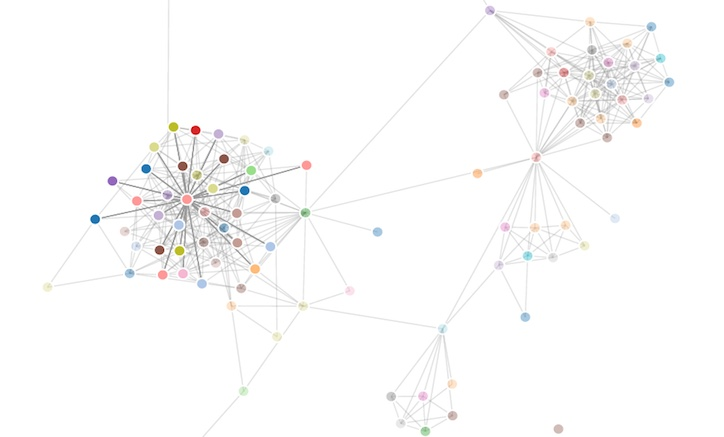
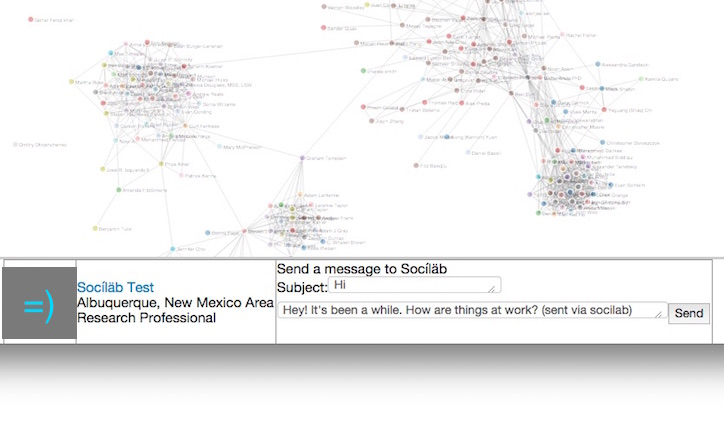

This site allows users to visualize and analyze their LinkedIn network using methods derived from social-scientific research. Full sample output is shown here. The site is free and open-source. Have fun!

Explore Your Connections
Click a node to highlight their connections to other people you know. Scroll to zoom in/out on particular clusters. Look for long distance connections - they might yield a 'small world' moment.

Catch Up
Click a node to write them a message directly from the app. The bar at the bottom of the page will show the contact's profile photo, name, and current position. Click their name to go to their full profile.
Analyze Your Network
Calculate metrics from social scientific research on social networks and compare the structure of your network to other users of the site.
Sign in via LinkedIn (by clicking the above button). If you do not see the button, you probably have your ad-blocker set to block social media plugins.
Like the now retired inMaps feature, our site allows you to view a diagram of your LinkedIn network. Please wait while the visualization and network metrics are produced. When finished, scroll down to view your network map and analysis.
At the bottom of the page, there will be a number of network measures drawn from sociological research on professional networks, as well as percentile bars comparing your aggregate network measures to past users.
Below each measure will be a brief interpretation.
Privacy: The program uses client-side javascript to perform the calculations, so your network is processed locally on your own machine. We do not store any demographic information your contacts, or your network structure besides the aggregate statistics used in the percentile bars.
This software is released under the GNU General Public License v2.
We provide a messaging feature that allows you to type and send a LinkedIn message to the selected contact within the application. This functionality requires that we request messaging permissions. We will never send messages on behalf of users without their express authorization.
Due to LinkedIn API throttles, we are limited in the number of contacts we can display in a day. We are able to display up to 450 to 500 contacts per user per day, where the precise limit depends on how densely connected your contacts are. Those with more than 500 contacts will see that the application draws contacts up to the limit in alphabetical order. To avoid hitting this cap, please do not refresh the page. LinkedIn also caps the number of contact calls our application can perform in a day at 100k. This means that if more than 200 users with 500 contacts log in, the site will no longer be able to render contacts until the following day. This limit resets each day at 12am UTC time, so you can always try again tomorrow. Unfortunately, there is no workaround for this until we are able to get an official partnership with LinkedIn. Thanks for your understanding!
If you find this page useful, please share with your friends.
Compatibility: This program works best with desktop browsers running Javascript (Chrome, Firefox, Safari).
Network Visualization
Coloring:
Connections to self:
Names:
Protips: Pay special attention to the bridges between network clusters, as they are the most likely to be surprises (e.g. a high school friend who knows a co-worker of yours, a 'small world' effect), or particularly influential (an alumni of your school that introduced you to your current employer). Also, click nodes to highlight your mutual connections. Note: LinkedIn's API limits us to 500 contact calls per user per day, and 100k contact calls total. If we've exceeded the limit, you will see an entirely disconnected network diagram. This is due to the fact that we do not store your network data, and run the query against LinkedIn's API each time you visit the page. This limit resets each day at 12am UTC time, so you may try again tomorrow. To avoid hitting this cap, please do not refresh the page, and try to limit visits to once per day. Thanks for your understanding!
Your Network Metrics:
Below is a list of measures for your egocentric network. The bar represents your percentile compared to other users. The percentiles are more informative than the raw values. Given that online networks are much larger and more disperse than those reported in network surveys, the raw values appear to be very low, as these measures were initially calibrated for smaller networks. The computed value is displayed under the bar with a brief interpretation. Note: This tool is primarily for entertainment and educational purposes. We know that LinkedIn networks are only a subset of people's actual contacts, and that these links might not be as informative as other types of network data, so any inferences should be discounted appropriately.
Absolute Size:20%
Effective Size:20%
Network Constraint:20%
Density:20%
Hierarchy:20%
Betweenness:20%
About the Project
This project is open source, and intended for personal or academic use. The idea is to educate people about their social network data and to make analysis more accessible for everday users. It has been used at over 20 universities across the world to teach students about the power of social network analysis as part of undergraduate and MBA curricula. You can email me with your use cases, feedback, and ideas.
You can find the javascript code for the project on github. Here are the .js files for the visualization and network analysis calculations. Please fork and contribute if you're interested in developing this project further!
About Me
My name is Craig Tutterow (web C.V.). I recently graduated from the University of Chicago, Booth School of Business with a PhD in Organizations & Markets. I am currently a postdoctoral researcher at Google's PiLab, where I work on applied social network research using personnel data.